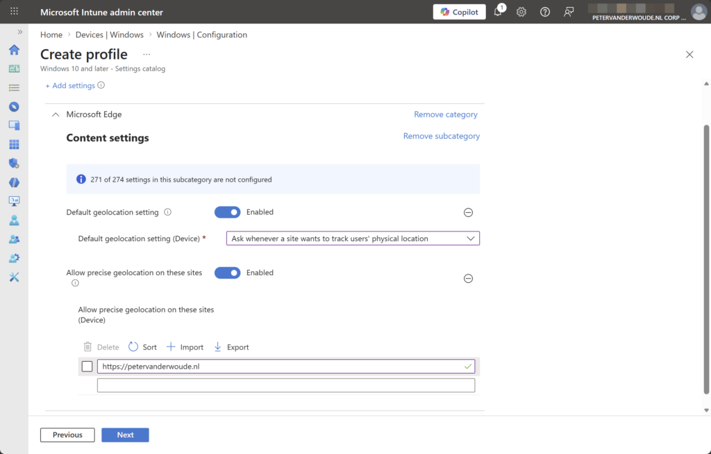
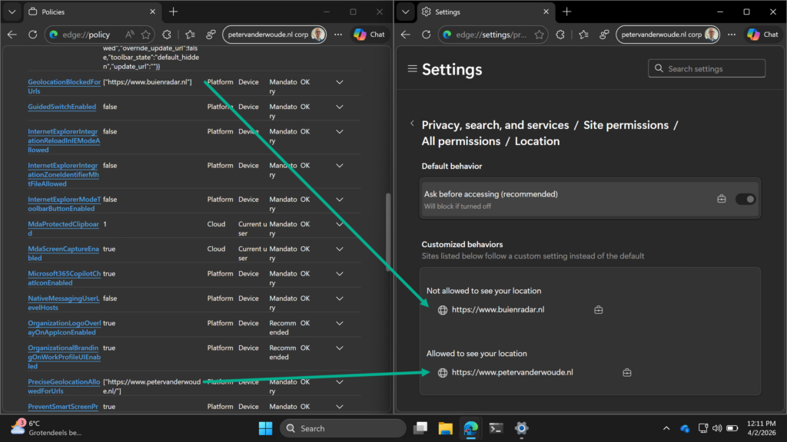

This week is all about managing (geo)location access for websites in Microsoft Edge. When apps are allowed access to the location of the user, that also includes the Microsoft Edge browser. That means that – depending on the configuration in Microsoft Edge – every website could potentially access the location of the user, or at least ask the user for access. Within Microsoft Edge there are, however, controls available that can be used for controlling the access of websites to the location of the user. Those controls enable the organization to define the default behavior, and also the behavior for specific websites. That enables a layered level of control over the location access in Microsoft Edge. The first layer is the access of apps in general, the second layer is the default access of websites within Microsoft Edge, and the third layer are specific websites in Microsoft Edge. This post will provide more details about the available configuration options, followed with the user experience.
Note: The focus is on Microsoft Edge. Configuration of location access for desktop apps is not the focus of this post.
Configuring geolocation access for websites in Microsoft Edge
When looking at configuring (geo)location access for websites in Microsoft Edge, it all starts with the configurations options. And it is good to be familiar with the different options. Especially because more options have been showing up recently. Those options are all related to providing geolocation access. From the default configuration, to allowing access for specific websites, to blocking access for specific websites. The table below provides an overview of the available options, and what to use them for.
| Setting (friendly name) | Description |
|---|---|
| Default geolocation setting | This setting can be used to configure whether websites can track the physical location of the user. IT administrators can allow tracking by default, deny tracking by default, or ask the user each time a website requests their location. |
| Allow precise geolocation on these sites | This setting can be used to specify a list of URL patterns for sites that are allowed to access the geolocation of the user without prompting for permission. |
| Block geolocation on these sites | This setting can be used to specify a list of URL patterns for sites that are blocked from accessing the geolocation of the user. These sites also can’t prompt the user for location permissions. |
The configuration options are all available via ADMX-backed settings in the Policy CSP. Those settings are all backed by the MSEdge.admx. Luckily, the configuration is pretty straightforward, as all settings are available within the Microsoft Edge > Content settings category in the Settings Catalog. The following eight steps walk through the process of configuring the default behavior for websites, in combination with allow access for a specific website.
- Open the Microsoft Intune admin center portal and navigate to Devices > Windows > Configuration profiles
- On the Windows | Configuration profiles blade, click Create > New Policy
- On the Create a profile blade, select Windows 10 and later > Settings catalog and click Create
- On the Basics page, provide at least a unique name to distinguish it from similar profiles and click Next
- On the Configuration settings page, as shown below in Figure 1, perform the following actions and click Next
- Click Add settings, navigate to Edge > Content settings and select Default geolocation setting and Allow precise geolocation on these sites in Settings picker
- Configure the required settings for the environment with the values like the following
- Switch the slider with Default geolocation setting to Enabled to enable the configuration
- Select Ask whenever a site wants to track users’ physical location to set the default behavior for geolocation access for websites to always ask the user (in other words: to prompt the user)
- Switch the slider with Allow precise geolocation on these sites to Enabled to enable the configuration
- Specify a list of websites that have automatically geolocation access
- Switch the slider with Default geolocation setting to Enabled to enable the configuration
{kind=link}

- On the Scope tags page, configure the required scope tags and click Next
- On the Assignments page, configure the assignment for the required user or devices and click Next
- On the Review + create page, verify the configuration and click Create
Note: Blocking specific websites geolocation access can be configured similar to allowing access by using the policy setting Block geolocation on these sites.
Experiencing geolocation access for websites in Microsoft Edge
After applying the configuration, it is pretty straightforward to experience the behavior. From a user experience perspective, the easiest would be to navigate to a website of which it is known that it asks for geolocation access. There are many examples of such websites. A clear example of a Dutch website that wants geolocation access is buienradar.nl. That website wants access to easily help with determining the local weather. It does that by initially providing a huge prompt that will explain the user that another prompt will be shown that will ask for geolocation access. With this configuration, that initial prompt will still be shown as that is coming from the website itself. The second prompt, however, will be blocked when the provided configuration is used in combination with the setting to block access for this specific website. That configuration is shown below in Figure 2. It shows the enforced default behavior, followed with specifically added allowed and blocked websites.
{kind=link}

More information
For more information regarding configuring geolocation access in Microsoft Edge, refer to the following docs.
Discover more from All about Microsoft Intune
Subscribe to get the latest posts sent to your email.